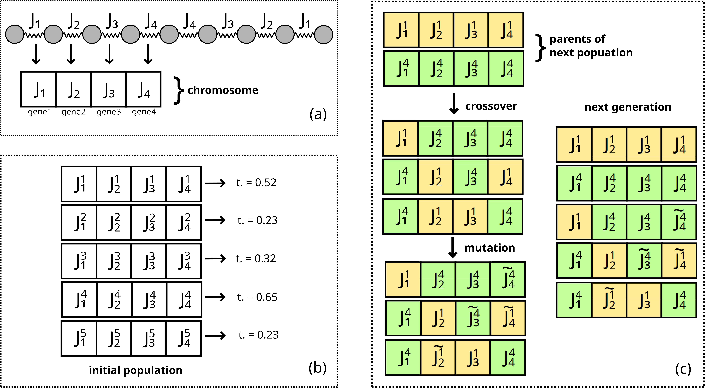
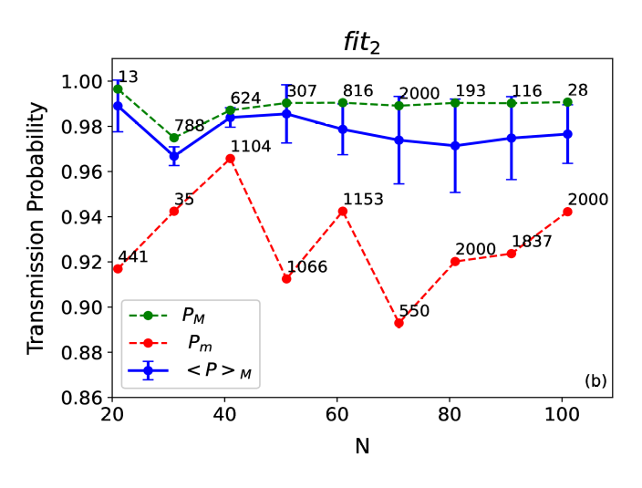
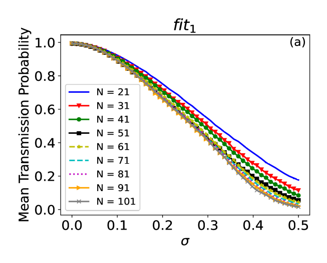

Diseñar buenos canales de transmisión para estados cuánticos arbitrarios en cadenas de espín implica optimizar una función costo. Generalmente, esa función es la fidelidad promedio de transmisión, que mide qué tan similar es el estado transmitido al estado que se preparó al principio del protocolo de transmisión. Cuando se promedia sobre todos los estados iniciales posibles, es una figura de mérito que cuantifica la calidad del protocolo.
En particular, se considera el diseño de cadenas de espín de tipo Heisenberg usando algoritmos genéticos. Este algoritmo altamente eficiente permite estudiar distintas propiedades de Hamiltonianos con buena capacidad de transmisión. Una de las desventajas aparentes de usar un método basado en aleatoriedad es que la intensidad de los coeficientes puede variar abruptamente entre los sitios. Modificando la función costo, se obtienen Hamiltonianos con coeficientes de intercambio que varían suavemente de sitio a sitio.
Algoritmo Genético
Se emplea un algoritmo genético (GA) para optimizar los coeficientes de acoplamiento de intercambio dependientes del sitio (ECCs) del Hamiltoniano de Heisenberg. Como el Hamiltoniano conmuta con la magnetización total en la dirección z, trabajamos en el subespacio de una excitación, lo que permite una evaluación numérica eficiente de la probabilidad de transmisión.
En el framework del GA:
- Una cadena de espín centrosimétrica se trata como un cromosoma
- Los ECCs juegan el papel de genes
- La función de fitness se basa en la probabilidad de transmisión del sitio 1 al sitio N

(a) Una cadena de espín centrosimétrica con 4 ECCs se trata como un cromosoma con 4 genes. (b) Los genes se inicializan aleatoriamente y se calcula el fitness para cada uno de ellos. (c) Los cromosomas más aptos se seleccionan como padres y se genera una nueva generación mediante cruzamiento. Algunos de ellos se seleccionan aleatoriamente para mutación.
Funciones de Fitness
Se emplearon dos funciones de fitness diferentes:
- Fit1: es igual a P₁,ₙ (probabilidad de transmisión). Esta optimización sin restricciones típicamente produce perfiles de ECCs ásperos, con fuertes variaciones sitio a sitio.
- Fit2: es proporcional a P₁,ₙ y agrega un factor de suavidad para obtener ECCs que varían suavemente de sitio a sitio. Esto produce perfiles de interacción suaves, más atractivos para implementación experimental.
Nuestros resultados muestran que los Hamiltonianos suavizados tienen la misma, o menos, habilidad de transmisión que los ásperos, y ambos tipos muestran robustez similar frente al desorden estático.
Comparación de Cadenas Optimizadas
Fit1: Desempeño Máximo

Distribuciones de ECC ásperas con excelente probabilidad de transferencia.
Fit2: Desempeño + Suavidad

Distribuciones de ECC suaves con probabilidad de transferencia similar.
Robustez ante Desorden Estático
Se aplica un modelo estándar de desorden donde cada ECC es afectado por Ji → Ji(1+ξi), donde ξi es una variable gaussiana aleatoria con media nula y desviación estándar σ. Las cadenas diseñadas son robustas para todas las longitudes simuladas: transmitirán con 98% de eficiencia para una fuerza de desorden del 5%.
Robustez ante Desorden (Fit1)

Probabilidad de transmisión media vs fuerza de desorden para ECCs ásperos.
Robustez ante Desorden (Fit2)

Probabilidad de transmisión media vs fuerza de desorden para ECCs suaves.
Conclusiones
- Los algoritmos genéticos son una herramienta altamente eficiente para diseñar configuraciones de ECCs que logren transmisión de estados cuánticos de alta calidad en cadenas de espín Heisenberg.
- Se pueden encontrar diferentes soluciones imponiendo restricciones en las funciones de fitness. Sin embargo, las propiedades físicas parecen ser independientes de la distribución de ECCs, por lo que no hay ventaja teórica. Las cadenas suavizadas podrían ser más prácticas para implementación experimental.
- Las cadenas diseñadas son robustas para todas las longitudes simuladas. Transmitirán con 98% de eficiencia para una fuerza de desorden del 5%.